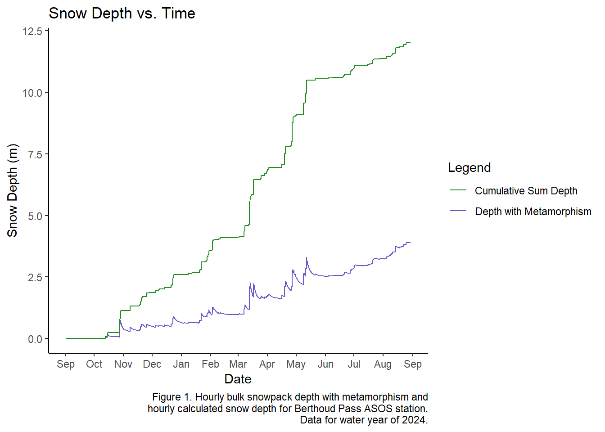
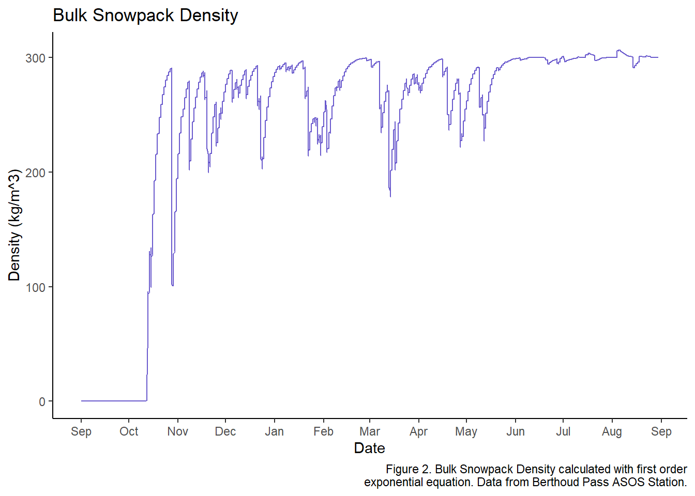

Chapter 5 Assignment 8 Snow Metamorphism
The metamorphism equation was calculated in excel, not R. Data is loaded in the Data folder, and the visualization is below.
library(tidyverse)
library(lubridate)
library(plotly)
test <- read.csv("Data/asosclean_metamorphism.csv")
test_clean <- test %>%
mutate(Date = as.Date(Date, format = '%m/%d/%Y'),
cum_depth = cumsum(replace_na(as.numeric(fresh_depth), 0)),
fresh_depth = as.numeric(fresh_depth),
fresh_density= as.numeric(fresh_density),
old_density = as.numeric(old_density),
old_depth = as.numeric(old_depth),
depth.f.o = as.numeric(depth.f.o),
density.f.o = as.numeric(density.f.o))
depth <- ggplot(test_clean, aes(x = Date)) +
geom_line(aes(y = depth.f.o, color = "Depth with Metamorphism"))+
geom_line(aes(y = cum_depth, color = "Cumulative Sum Depth"))+
scale_color_manual(values = c("Depth with Metamorphism" = "slateblue", "Cumulative Sum Depth" = "forestgreen"))+
scale_x_date(date_breaks = "1 months", date_labels = "%b")+
labs(
x = 'Date',
y = 'Snow Depth (m)',
title = 'Snow Depth vs. Time',
caption = str_wrap("Figure 1. Hourly bulk snowpack depth with metamorphism and hourly calculated snow depth
for Berthoud Pass ASOS station. Data for water year of 2024.", width = 60),
color = "Legend"
)+
theme_classic()
depth
density <- ggplot(test_clean) +
geom_line(aes(x = Date, y = density.f.o), color = "slateblue")+
scale_x_date(date_breaks = "1 months", date_labels = "%b")+
labs(
x = 'Date',
y = 'Density (kg/m^3)',
title = 'Bulk Snowpack Density',
caption = str_wrap('Figure 2. Bulk Snowpack Density calculated with first order exponential equation.
Data from Berthoud Pass ASOS Station.', width = 60)
)+
theme_classic()
density